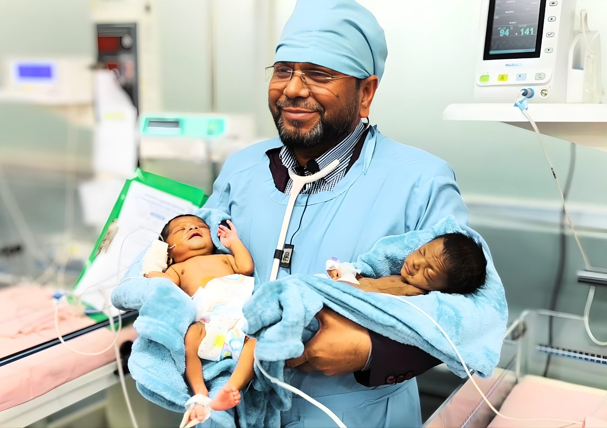

Medical care
Immediate NICU admission and the critical treatments a rescued newborn needs in the first, most fragile days — regardless of ability to pay.
ডা: মুজিব নিউবর্ন ফাউন্ডেশন

Dr. Mozib Newborn Foundation finds abandoned newborns across Bangladesh, rushes them into critical medical care, and gives every one of them something a hospital can't: a family to grow up in.
Every case begins the same way — a phone call, and someone willing to go.
Placeholder figures — swap in verified totals in index.html (search “Newborns rescued”).
What we do
Immediate NICU admission and the critical treatments a rescued newborn needs in the first, most fragile days — regardless of ability to pay.
Vetted, loving foster homes and legal support to place each recovered child in a family — with follow-up care as they grow.
Building partnerships abroad — funding, equipment and expertise — to widen how many newborns we can reach and treat.
From rescue to home
A call comes in. A team is dispatched within the hour, day or night.
Immediate admission to a partner hospital for critical stabilisation.
Ongoing medical monitoring until the child is strong enough to leave care.
Placement with a vetted foster family, with our follow-up support after.
Get involved
A NICU admission, a foster placement, a follow-up visit — every one of these has a real cost, and every taka reaches a specific child. Choose how you'd like to help.